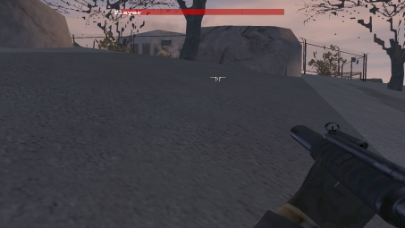

| Autor : Str, Jan Èepera |
Skript nie je samostatný k dispozícii Zpìt na scripty |
| Ukazate¾ zdravia #2 | |
|
Ak sa zaraïujete medzi old-school hráèov, urèite si spomínate na misiu When The World Ends, v ktorej existoval
ukazate¾ zdravia (nielen) nepriate¾ov.
 Èepera už poriadne dávnejšie vytvoril ukážkovú misiu pod¾a vzoru ukazate¾a z WTWE. Vo svojej podstate ide o sadu 6 zdrojov (pozadie ukazate¾a, health-bar - ukazujúci zostávajúce zdravie a meniace sa v skripte, ståpèeky pre ukazovate¾ a textový nápis pri ukazateli). TonyHawk |
|
| Stáhnout ukázkovou misi | |